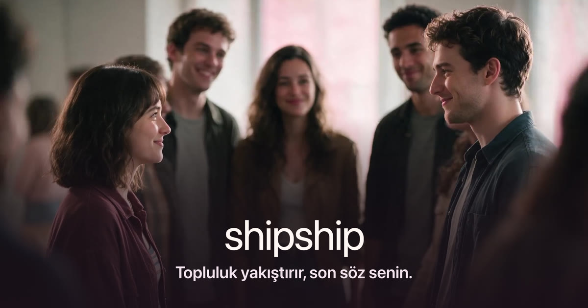
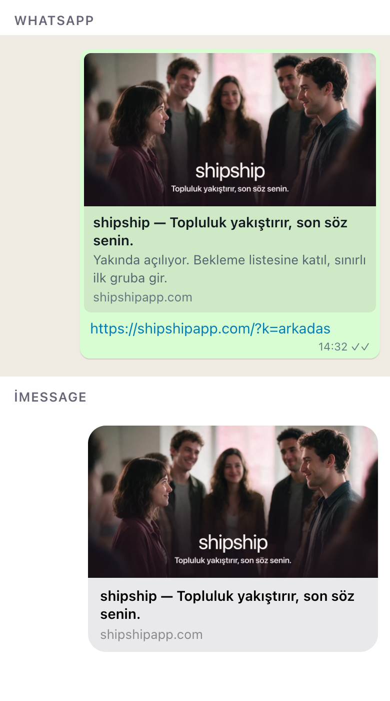
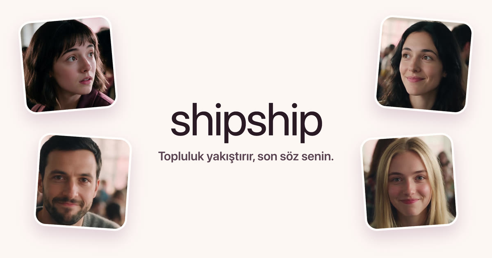
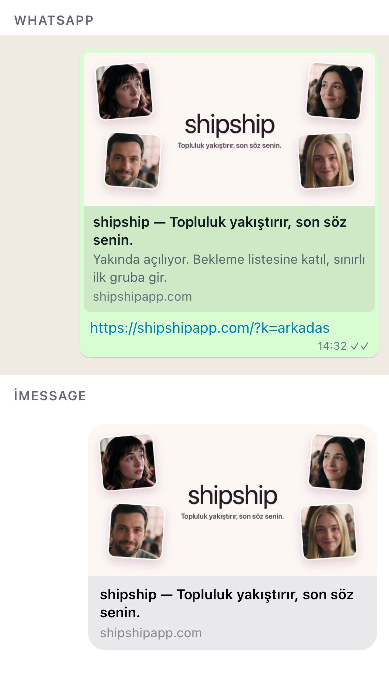
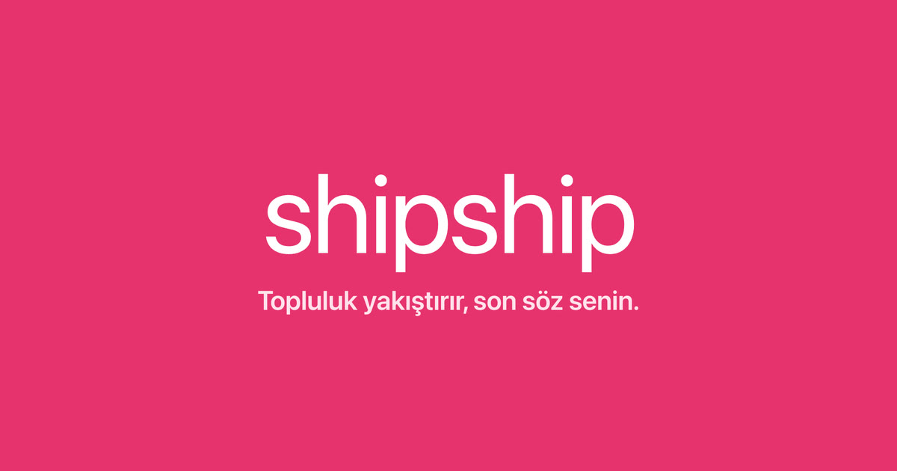
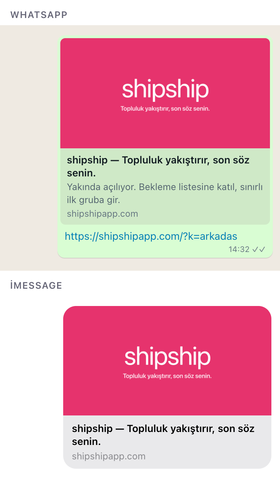

Hinge yaklaşımı: hikâye anlatan gerçek bir an. Filmden ikili + arkadaşları sahnesi, altta marka ve tez.


Bumble yaklaşımı: marka yazısı ortada, filmden dört yüz iki yanda. Krem zemin sitenin rengi.


Arc / Timeleft yaklaşımı: marka pembesi zemin, beyaz marka yazısı ve tez. En tanınır, en az anlatan.

